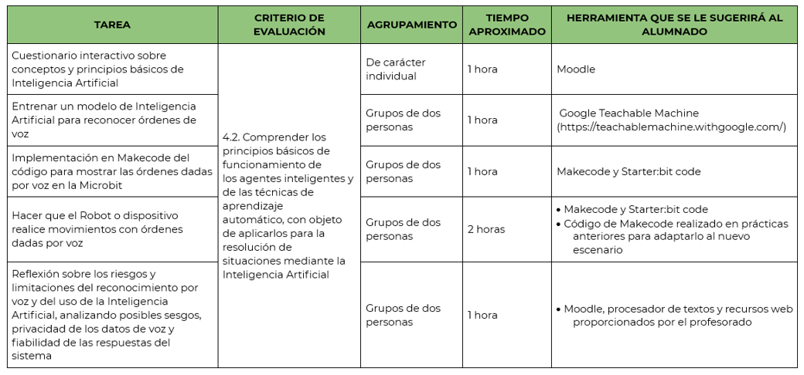

Dando órdenes por voz al Robot
Relación de tareas con criterios de evaluación
Obra publicada con Licencia Creative Commons Reconocimiento Compartir igual 4.0

Obra publicada con Licencia Creative Commons Reconocimiento Compartir igual 4.0